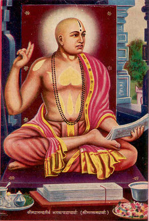

Purnaprajna : Anandatirtha : Madhva
Even from childhood, the religious student Vasudeva (Madhva) had spiritual learning; he was drawn to the path or renunciation. Further, he possessed an extraordinary intelligence. While the parents were eager to prepare him to set up a family, Vasudeva went far away from home and family, thinking that the entire universe was his home. Even as a young boy of eleven years, he chose initiation into the monastic order from Acyuta-prajna, a reputed ascetic of the time, near Udupi, in the year Saumya (1249 A.D.)6 The preceptor Acyuta-prajna7 gave the boy Vasudeva the name of ‘Purnaprajna’ at the time of his initiation into sanyaasa.
Only within forty days of his initiation into sanyaasa, a very remarkable episode occurred in the Acharya’s career. Expert scholars in Tarka (logic) of nation wide fame, such as Vasudeva Pandita, arrived in Udupi in the course of their search for a competitor who might conquer them in debate. This proud scholar who had sounded his drum of victory everywhere in the country was defeated by the little monk-Purnaprajna.
Rejoicing at the extyraordinary brilliance of the little monk, his preceptor Acyuta-prajna consecrated Puurnaprajna as the head of the empire of Vedanta and conferred on him the title ‘Anandatirtha’.
Another time, a Buddhist scholar visited the holy center of Acyuta-prajna. He was accompanied by another scholar, Vadisimha, who had embraced Buddhism after his defeat by Buddhisagara in a philosophical debate, though he was originally a follower of Vedic religion.
Puurnaprajna silenced both these Buddhist scholars who had traveled all over the country winning certificates of victory in philosophical debates. The joy of Acyuta-prajna was boundless. The title ‘Ananda-tirtha’ conferred by him on Puurnaprajna at the time of the latter’s consecration function became indeed meaningful.
Thus Puurnaprajna is the Acharya’s name given to him at the time of Samnyasa. The name conferred on him at the time of consecration as the Master of Vedanta is ‘Ananda-tirtha’. And the favourite nom de plume assumed by him by choice is the Vedic name ‘Madhva’8. The Acharya gained publicity later on by this favourite name itself, traceable to the Vedas.
Southern Tour
The Acharya set out on a tour of South India even in his teens. He visited prominent places of pilgrimage like Anantashayana, Kanyaakumaari, Ramesvara ad Sriranga. Wherever he went, he delivered discourses and preached the message of his Tattvavada or religious truth to the people. This initiated a new discussion among scholars all over India. The Acharya refuted in clear terms a few age-old beliefs. He stated that spirituality should not be mixed up with superstitions. As a result, there was hot opposition to him from some orthodox extremists. But the Acharya braved it all with courage, without yielding to any mean threats.
The urge which was deeply surging in the heart of the Acharya for long turned into a firm resolve as a result of this tour. The superstitions in the way of this path of philosophical truth should be wiped out! My whole life should be dedicated to the spread of ultimate truth’.
The first task accomplished by the Acharya as soon as he returned to Udupi, after adopting this firm resolve, was the writing of a commentary (bhashya) on the Bhagavadgita.
The Call of Badari
In course of time, the Acharya desired to tour North India and to spread the message of Vedic religion far and wide. The holy center of Badari beckoned to him irresistibly. Fired by the wish to visit holy places like Vyasa’s hermitage, the penance-grove of Nara-Narayana etc., and to present his commentary on the Gita as a tribute to sage Vyasa, the Acharya moved straight to Badari. There he observed a vow of strict silence for 48 days, bathing in the holy Ganga. And then he set out alone towards Vyasa-Badari, his cherished destination.
After his return from there, the task of writing a commentary on the Brahma-sutras came to be undertaken by the Acharya. The Acharya never wrote any work of his by hand. It was his practice to dictate continuously to his disciples who would take them down. His composition of works was as facile as his discourses. A disciple of the Acharya, Satya-tirtha by name, reduced to writing in palm leaves, whatever was dictated by the Acharya.
In the meantime, the Acharya’s influence had spread far and wide though out the country. Scholars all over India were stunned by his extra-ordinary genius, never seen or heard of before. The circle of his disciples grew bigger and bigger. Some ascetics got initiation from him and were admitted into the order of samnyasa.
Once, while returning from Badari, the Acharya was camping enroute in a holy place on the banks of the Godavari. Here he was accosted by an eminent pandit, Sobhana-bhatta by name. This person was well known in that region as a peerless scholar. This visit changed the entire career of the man. Seeing the extraordinary personality of the Acharya, and listening to his wonderful discourses, he was so much overwhelmed that he became the Acharya’s desciple and joined his retinue.
Acyuta Prajna’s cup of happiness was full on seeing Acharya Madhva back home after his resounding victory in all parts of the country and on his rich retinue of disciples hailing from different places. Though in the beginning he too had his own doubts about the Acharya’s view of ultimate reality (Tattvavada), now he became a whole-hearted adherent of the Acharya’s new philosophy.
Installation of Krishna - Return to Badari
The Acharya who stayed in the environs of Udupi for some more time wrote his bhasyas or authoritative commentaries on all the ten Uanishads. He composed glosses on forty hymns of the Rgveda, opening up for the first time its vista of spiritual significance. He also wrote the treatise Bhagavata-tatparya highlighting the essential teachings of the Puranas. Many topical handbooks were also authored by him to suit different occasions. A large number of of devotional songs too were composed by him which could be sung by his disciples, while moving with him in groups.
It was during this period that the Acharya installed the image of Krishna9 which he found in the western ocean near the Udupi sea-coast. After sometime, he left some disciples behind for performing Krishna’s worship and undertook his second tour to Badari.
Once the Acharya had to cross the river Ganga. The other bank was under Muslim rule. Although stopped by the Muslim soldiers on the other side, the Acharya boldly crossed the river and reached the other bank. He was taken before the Muslim ruler who was filled with wonder by the boldness of the ascetic.10 The Acharya said: ‘I worship that father who illumines the entire universe; and so do you. Are we not both children of that only God? Why should I fear then either your soldiers or you?’
Hearing such words for the first time from the mouth of a Hindu monk, the Muslim king was astounded. He was filled with reverence for this unique monk. He begged the Acharya to stay permanently in his kingdom and offered gifts of several jahagirs. But the Acharya who was free from worldly cravings, rejected the offer and walked on to Badari, with the monk’s staff in his hand.
Once, when his party was attacked by a band of robbers on the difficult road to the Himalayas, athe Acharya made his pupil Upendra-tirtha silence them after a fierce fight. He used to say: ‘One should cultivate strength of body even like strength of mind; it is impossible for a weak body to house a strong mind’. Accordingly he had made his disciples achieve strength in their body as well as in their Vedantic pursuit.
To the people of that time, the Acharya’s physical strength itself was something miraculous, because his body was strong and adamant. Even to this day, the huge rock-boulder lifted up and placed in the river Bhadra by the Acharya near Kalasa bears witness to his Herculean strength. This incident is confirmed by the sentence inscribed on that stone.11
The Acharya had darshana once again of Lord Narayana and of sage Vyasa. On his return home thereafter, he wrote the treatise-Mahabharata-tatparya-nirnaya. On his way home, he visited Kashi. There he held a philosophical debate with an elderly Advaita ascetic, Amarendra Puri. He had to go away silently, humbled by the dazzling genius of the Acharya. Then came Kuruksetra. Here occurred a strange episode.
The Acharya got a mound there excavated and demonstrated to his disciples the buried mace of (the epic hero) Bhima therein; and once again had it buried under the ground.
Read more about Madhvas life on tatvavada.org